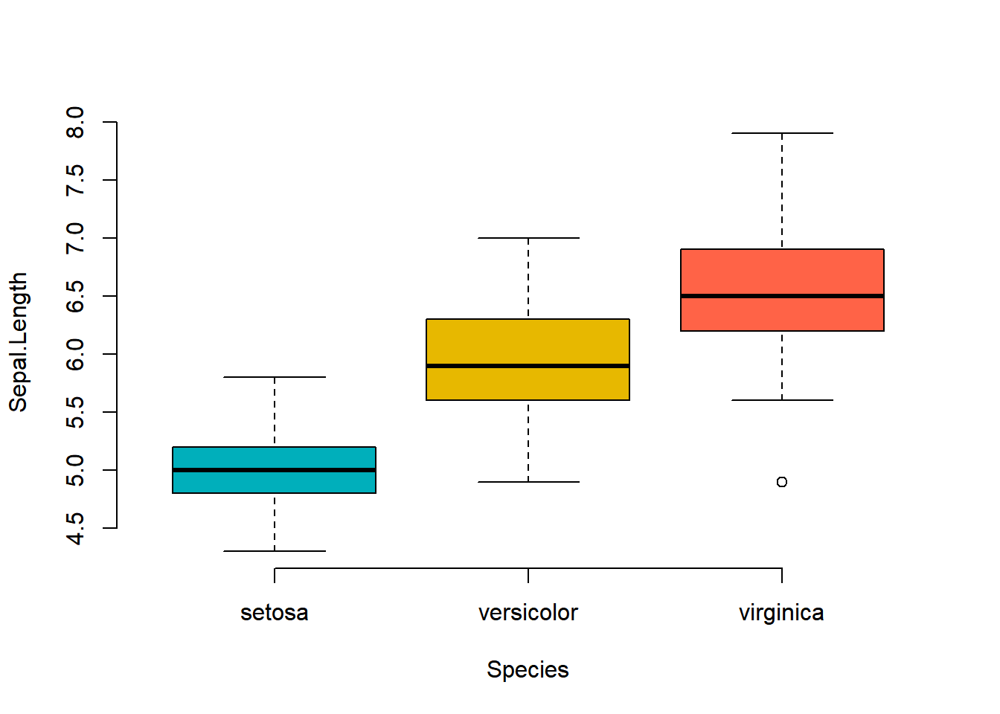
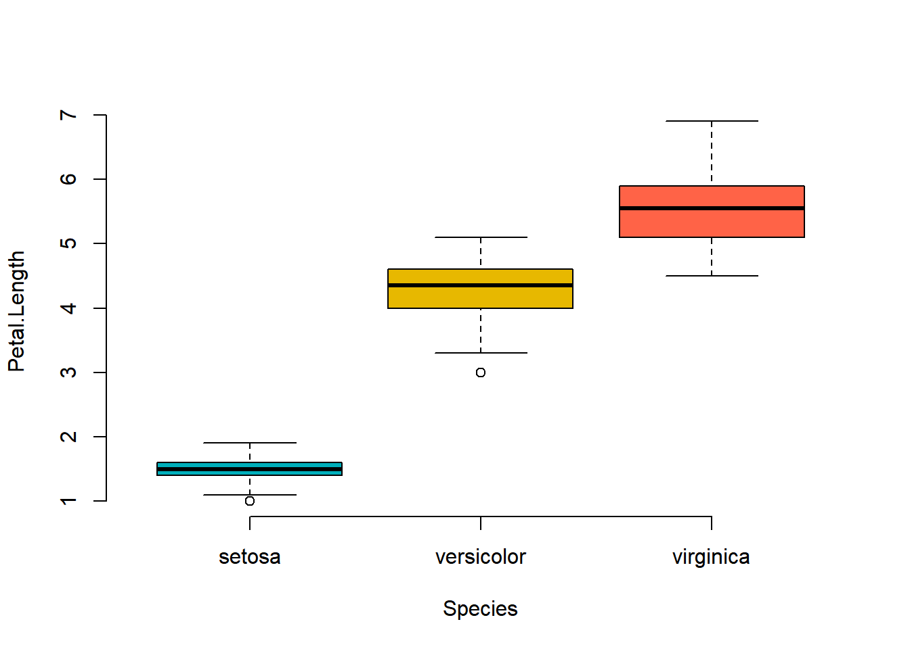

Chapter 9 다변량 분산분석(MANOVA:Multi-variate Analysis Of Variance)
9.1 데이터 불러오기
data(iris)
str(iris)## 'data.frame': 150 obs. of 5 variables:
## $ Sepal.Length: num 5.1 4.9 4.7 4.6 5 5.4 4.6 5 4.4 4.9 ...
## $ Sepal.Width : num 3.5 3 3.2 3.1 3.6 3.9 3.4 3.4 2.9 3.1 ...
## $ Petal.Length: num 1.4 1.4 1.3 1.5 1.4 1.7 1.4 1.5 1.4 1.5 ...
## $ Petal.Width : num 0.2 0.2 0.2 0.2 0.2 0.4 0.3 0.2 0.2 0.1 ...
## $ Species : Factor w/ 3 levels "setosa","versicolor",..: 1 1 1 1 1 1 1 1 1 1 ...levels(iris$Species)## [1] "setosa" "versicolor" "virginica"iris(붓꽃 데이터셋) Sepal.Length: 꽃받침 길이 Sepal.Width: 꽃받침 너비 Petal.Length: 꽃잎 길이 Petal.Width:꽃잎 너비 Species: 붓꽃의 종
R에 있는 기본 데이터셋인 iris를 불러온다.
5개의 변수와 150개의 관측치가 있다.
9.2 다변량 분산분석이란
두 개의 집단의 평균의 비교할때, T-test를 사용했다.
분산분석은 3개 이상의 집단의 평균을 비교할때 사용한다.
여기서 말하는 집단은 독립변수의 요인 개수이다.
그리고 종속변수의 집단에 따라 분산분석이 나뉘어 진다.
종속변수(다변량) ~ 독립변수(3개 이상 집단) 일때, 평균을 비교하는 기법이다.
boxplot(Sepal.Length ~ Species,
data=iris,
frame = FALSE,
col = c("#00AFBB", "#E7B800", "tomato"),
ylab="Sepal.Length")
boxplot(Petal.Length ~ Species,
data=iris,
frame = FALSE,
col = c("#00AFBB", "#E7B800", "tomato"),
ylab="Petal.Length")
boxplot으로 나타내면 위와 같이 구성되어 있다.
종속변수에 길이에 대한 변수만 다루겠다.
9.3 MANOVA
귀무가설 : 모든 평균들은 다 같다.
대체가설 : 평균들이 모두 같지는 않다. (’평균들이 모두 다르다’가 아니다.)